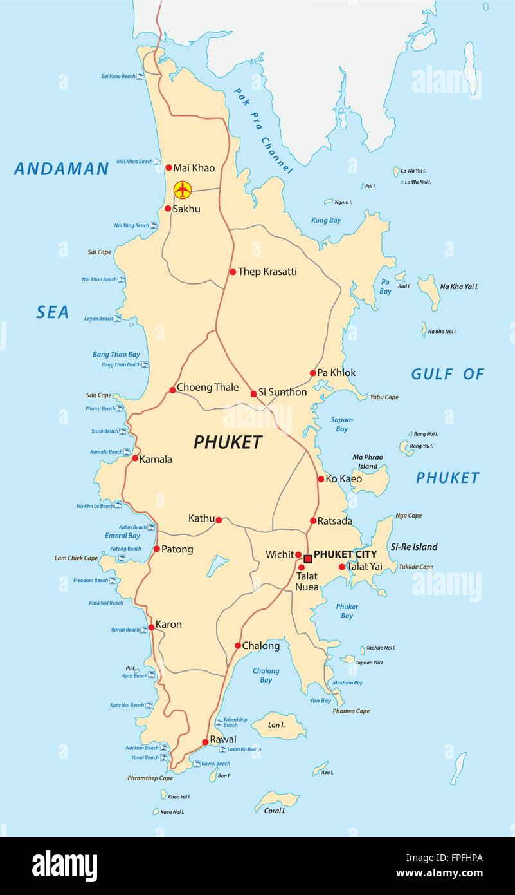

Phuket City, on Phuket Island, is the capital of Thailand’s Phuket Province. In the Old Town, Thalang Road is lined with colorful 19th-century shophouses and Sino-Portuguese buildings. Built in 1903 by a wealthy tin merchant, Baan Chinpracha mansion has Italian floor tiles, shuttered windows and antique furniture. Set in a 1930s manor, the Thai Hua Museum has exhibits on Phuket’s culture and history.

Phuket is famous for a number of things like exotic beaches, vibrant nightlife, colorful night markets, delicious seafood, white marble Big Buddha and of course scuba di
contact: snis0228@snis.edu.in
Back in the 11th Century, Phuket used to be known as “Junk Ceylon” because it was only populated by sea gypsies and nomad tribes. Its current name came from the word “bukit” which means hill in Malay due to its hilly landscape.